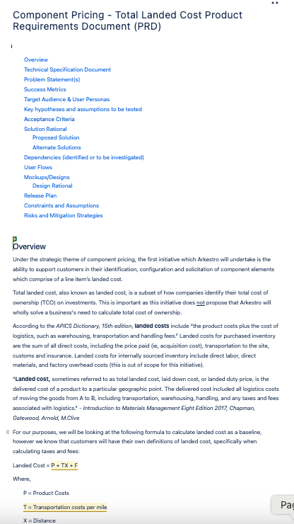
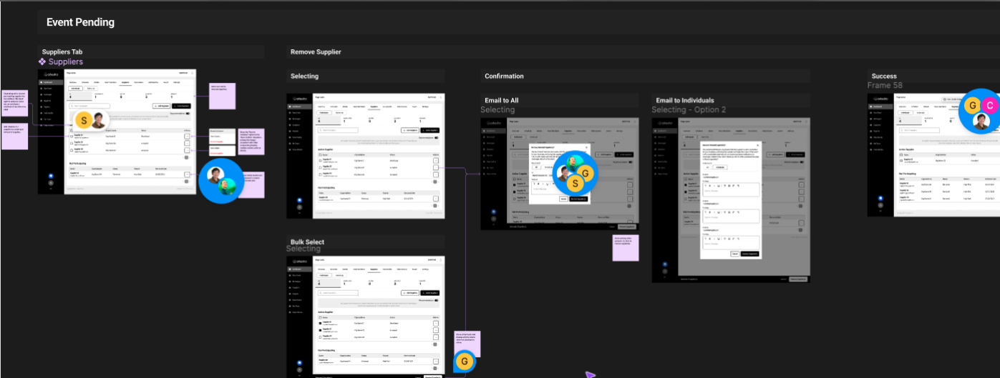
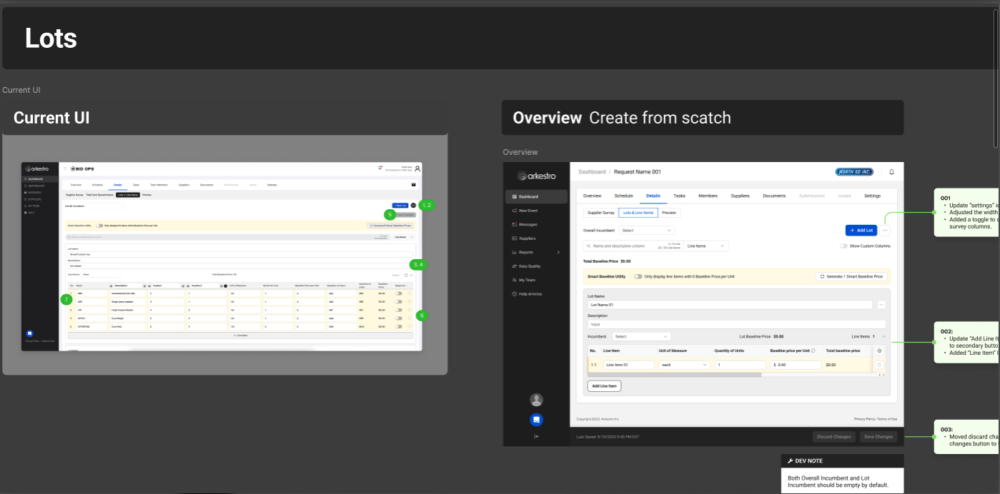
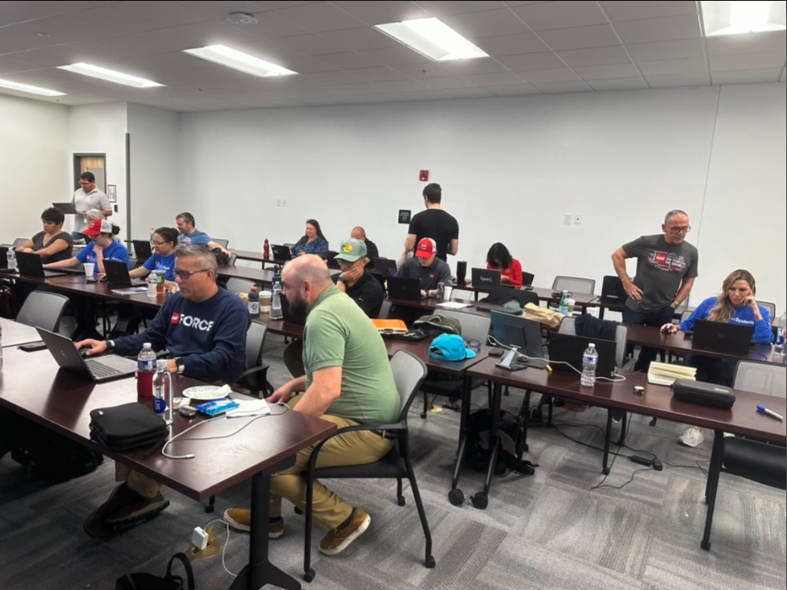
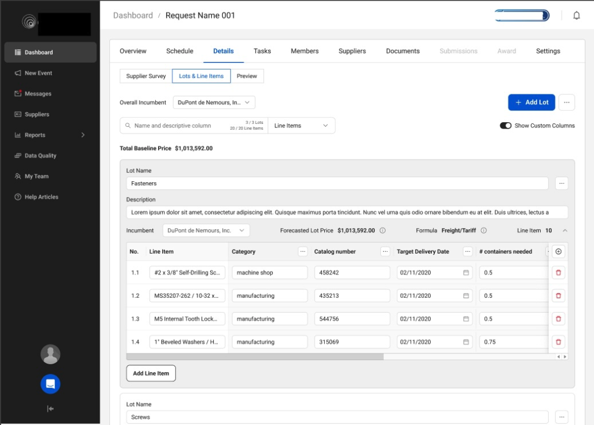

Despite pressure to ship immediately, pushing back to run research first meant we solved the right problem — and increased feature applicability from 4% to 40%.
Despite the vague name, Component Pricing had a clear user need: buyers needed a breakdown of pricing elements so they could compare what went into the cost of something and avoid surprises when the bill arrived. In simplest terms — comparing apples to apples.
There was significant pressure from senior leadership to move quickly and get designs out the door in order to satisfy customer requests and protect revenue. I pushed back. I asked whether we fully understood the problem, how confident we were in the scope, and where the data supporting this direction was. The answer was silence.
With the support of a few key stakeholders, I advocated for a short discovery phase before any design work began. The decision to be transparent with customers about this process had an unexpected effect — users were excited that we were talking to them and taking the time to truly understand their needs rather than rushing to ship something.
Users had to piece their work together to form their own source of truth.
Their legacy system required them to open a spreadsheet, hunt for information, assemble requirements, apply formulas, and then execute their order. Things often got "lost in the shuffle." The platform wasn't the full solution — it was one piece of a broken process.The Product Manager authored a Product Requirements Document (PRD) that outlined the target goal, user types, what was in and out of scope, and technical specifications from the tech lead. This was shared across UX, Product, and Engineering to ensure alignment before any design work began — creating a shared foundation and reducing costly mid-sprint surprises.

User interviews were conducted to validate problem definition and ensure alignment on what we were actually solving. Our goal was to test quickly, surface known issues, and uncover any hidden pain points before designs were finalized.
Maze was used to set up rapid tests with two user groups: those with procurement experience and those without. Our design philosophy was day-one-no-training functionality — the interface had to be intuitive regardless of a user's background.
A relatively small sample of 8 users were interviewed via moderated usability tests. This gave us the confidence to define scope for the first version and align stakeholders on what was deliverable within the time available.
Low-fidelity sketches were done in Figma based on what we knew from research. These were used to test hypotheses with representative users and surface gaps in the experience before investing in high-fidelity work.
Because this was not starting from scratch, the sketches also captured the relationship between the existing Lots and Line Items interface and the revised view — which included added functionality but reduced complexity. This included a number of architectural changes and naming convention updates that had to cascade across the rest of the platform.

High-fidelity mockups were built into clickable prototypes and tested with users during moderated sessions. The team traveled to meet with users on-site at two different customer locations over the course of three weeks.

On-site research added a dimension that remote sessions couldn't: we got to observe the users' full workflow, not just the portion that happened inside the platform. Seeing their legacy process end-to-end — spreadsheets, manual formulas, assembled requirements — made the opportunity clearer than any remote session could have.

This work required balancing speed, clarity, and complexity against both business pressure and user needs. While there was urgency to move quickly, validating the problem first was non-negotiable to avoid solving for the wrong thing.
In the solution, progressive disclosure was used to reduce cognitive load — surfacing the most relevant pricing details upfront while allowing users to drill deeper as needed. Although this added a couple of interaction steps, it made the experience approachable for both new and experienced buyers and ultimately drove higher engagement and decision-making confidence.
Focusing on clear, comparable inputs over exhaustive data detail made the feature accessible. The tradeoff was some flexibility, but the result was a feature users actually used.

The initial results were promising, but also revealed gaps in our metrics. Greater granularity was needed to distinguish causation from correlation. Using Amplitude, the next phase focused on analyzing user journeys, retention rates, and drop-off points to inform subsequent iterations.
This project also reinforced the value of slowing down to speed up. The time invested in research before design more than paid for itself — both in the quality of the solution and in the relationships it built with customers.